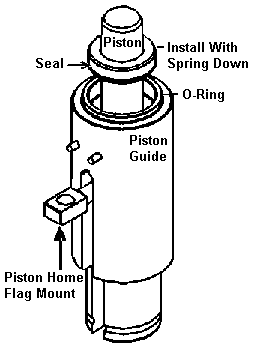

This procedure describes how to remove, disassemble, reassemble, and install the substrate pump and seals.
Required Materials:
Lint-free tissue
Citranox (20% solution)
Substrate
New seal and o-ring for the substrate pump
Perform this procedure when an instrument displays poor substrate pump precision.
Figure 66: Substrate pump assembly components

Remove the substrate pump.
Note: To prevent contamination, wear powder-free latex gloves and be careful when handling all components of the pump.
Power off the instrument.
Disconnect the substrate assembly connectors from the fluidics interface PCB (motor, home sensor, thermistor, heater).
Disconnect the substrate supply line from the pump housing. Secure the supply line as high as possible to prevent substrate from dripping into the instrument.
Disconnect the substrate probe from the pump housing.
Loosen the two hex-screws located at the base of the pump housing.
Lift the assembly upward and out of the instrument.
Disassemble the substrate pump and remove the seals.
Remove the retaining screw from the piston home flag.
Loosen and then remove the hexagonal piston guide cap. Remove the piston guide from the manifold.
Remove and then discard the large o-ring.
Remove the piston. Pull the seal out of the guide and discard the seal.
Use lint-free tissues or swabs and Citranox to scrub the inner surfaces of the pump chamber and the piston and remove any surface residue. Rinse with distilled water.
Note: Do not scratch the interior of the pump housing.
Install the new substrate pump seals and reassemble the pump.
Install the new seal into the piston guide.
Note: Install the seal with the exposed spring toward the guide.
Without dislodging the seal from the piston guide, install the piston into the seal,
Install a new sealing o-ring onto the piston guide.
Install the piston guide into the pump housing and secure it using the hexagonal piston guide cap.
Push the piston arm upward until it is flush with the home flag on the drive belt.
Install the home flag retaining screw through the arm and into the home flag. Tighten the retaining screw.
Note: When attaching the home flag to the piston mount, mate the piston mount with the shoulder of the home flag.
Install the substrate pump.
Reinstall the substrate pump assembly into the instrument and secure the assembly using the two mounting screws.
Reconnect the fittings and electrical connectors.
J5 - Valve
J7 - Heater
J12 - Home sensor
J17 - Thermistor
J29 - Motor
Prime the substrate system and verify operation of the substrate pump.
Prime substrate four cycles. Inspect for leaks during and after the priming cycles. Wait ten minutes and complete four more substrate primes.
Note: If RLUs in the substrate portion of System Check are elevated or depressed, confirm that the substrate volume delivered is 200 µL, perform additional substrate priming cycles to flush any residual Citranox solution from the system, and then repeat the System Check.